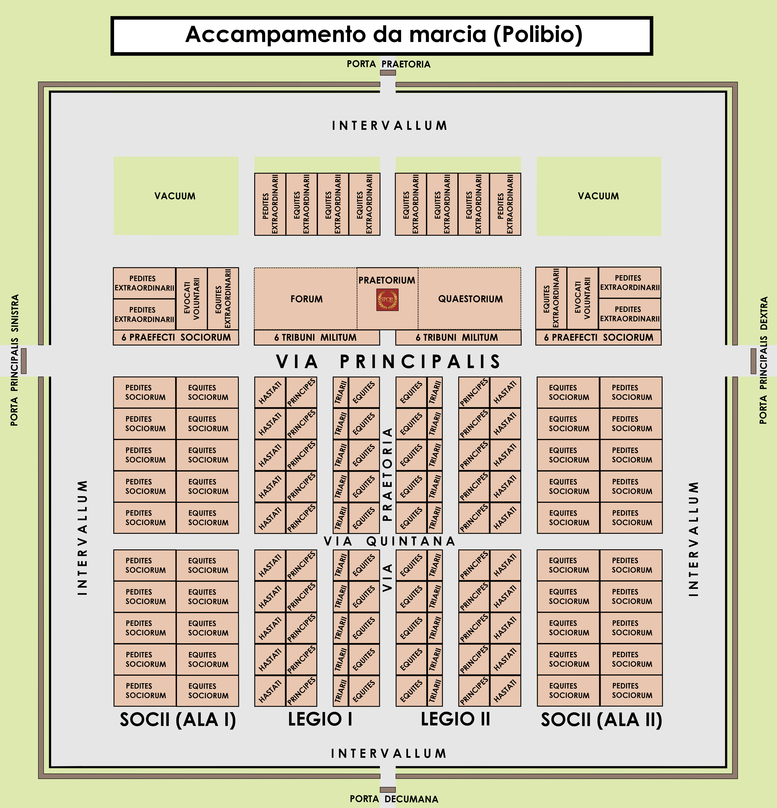
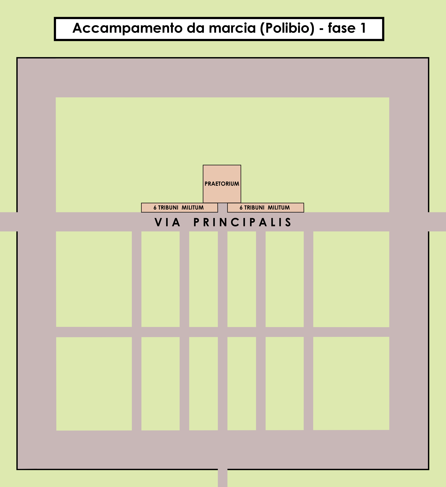
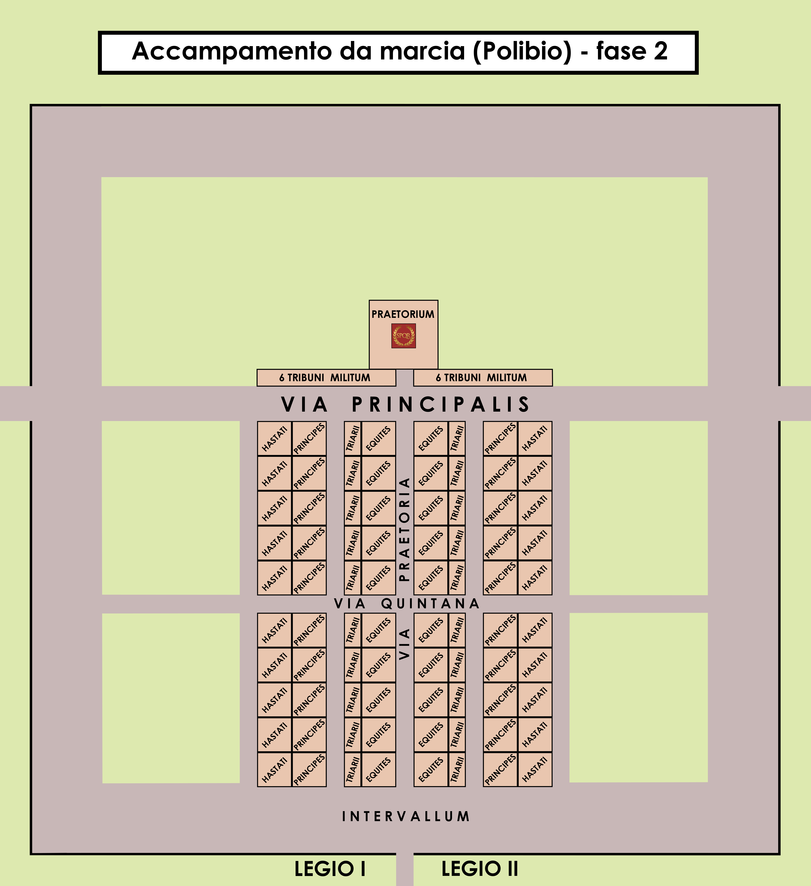
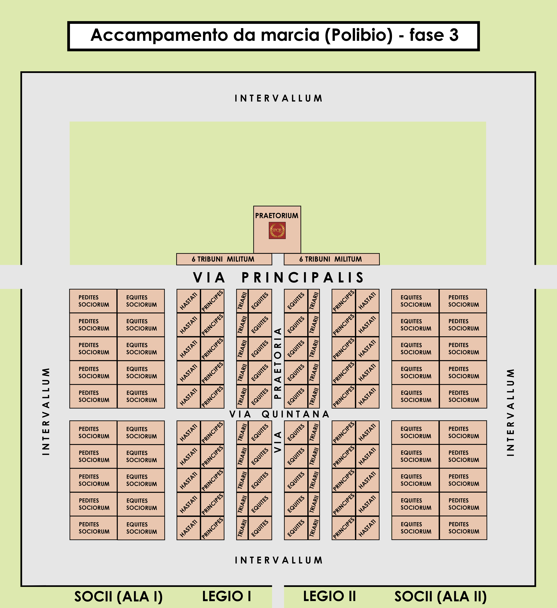

Cosa erano?
Le 𝙘𝙖𝙨𝙩𝙧𝙚 erano accampamenti fortificati nei quali risiedeva l'esercito romano (legione);
erano di forma rettangolare e presentavano due vie principali (viae): 𝙘𝙖𝙨𝙩𝙧𝙤 e 𝙙𝙤𝙘𝙪𝙢𝙖𝙣𝙤.
Come venivano costruite?
Per costruire una castra i Romani seguivano dei determinati passaggi:
La scelta del luogo veniva decisa da un tribuno e dai centurioni; essi
perlustravano la zona ed esaminavano il terreno.
Se le condizioni lo permettevano, si procedeva a trovare il luogo in cui
piantare la tenda del comandate ed a misurare l'area del 𝙥𝙧𝙖𝙚𝙩𝙤𝙧𝙞𝙪𝙢;
Veniva tracciata una linea lungo la quale porre le tende dei tribuni;
Venivano
poi poste le tende dei cavalieri alla perpendicolare delle tende dei tribuni e alle spalle le tende della fanteria, dei
prìncipi, degli hastati e per ultimi le tende dei socii;
Veniva posta la
tenda del generale (𝙦𝙪𝙚𝙨𝙩𝙤𝙧𝙞𝙪𝙢), destinata in parte al forum ed in parte occupata dalla tenda
del questore, responsabile del deposito degli approvvigionamenti.
Per ultimo, ai fianchi del praetorium veniva costruito il forum (foro) e il questorium.
Nelle 2 estremità delle tende dei tribuni venivano posti i prefetti con le truppe scelte (extraordinarie)




Le strategie di Giulio Cesare ed il figlio Augusto
Nel 58 a.C. Giulio Cesare fece insediare nell' area come
posizione strategica, per la via delle Galie, un accampamento militare, ampliandolo nel 44 a.C.
Intorno al 28 a.C Augusto dedusse una
seconda colonia, il cui impianto urbano a castrum sarà quello che ancora adesso è rilevabile.
La colonia ebbe una struttura definitiva soltanto nel I secolo, con l' edificazione di una cinta muraria.
Come veniva organizzato il territorio?
La struttura viaria è a scacchiera sulla topografia del castrum iniziale, successivamente fu estesa
anche in altre zone della città, almeno in prossimità del centro.
Infatti, a differenza della maggioranza delle città italiane che hanno una struttura viaria
concentrica con uno sviluppo di arterie radiali culminanti nel centro cittadino con sede delle principali
attività pubbliche, il reticolo viario della città di Torino disegna una pianta a scacchiera, le sue vie
si sviluppano in inea retta incrociandosi a 90° con un orientamento simile a quello
del 𝙘𝙖𝙨𝙩𝙧𝙪𝙢 romano un 𝙘𝙖𝙧𝙙𝙤 𝙢𝙖𝙭𝙞𝙢𝙪𝙨 (direzione nord-sud) ed un 𝙙𝙚𝙘𝙪𝙢𝙖𝙣𝙪𝙨
𝙢𝙖𝙭𝙞𝙢𝙪𝙨 (direzione est-ovest), incrociandosi al centro del castrum, e parallele alle quali dovevano svilupparsi tutte
le altre vie interne al castrum.